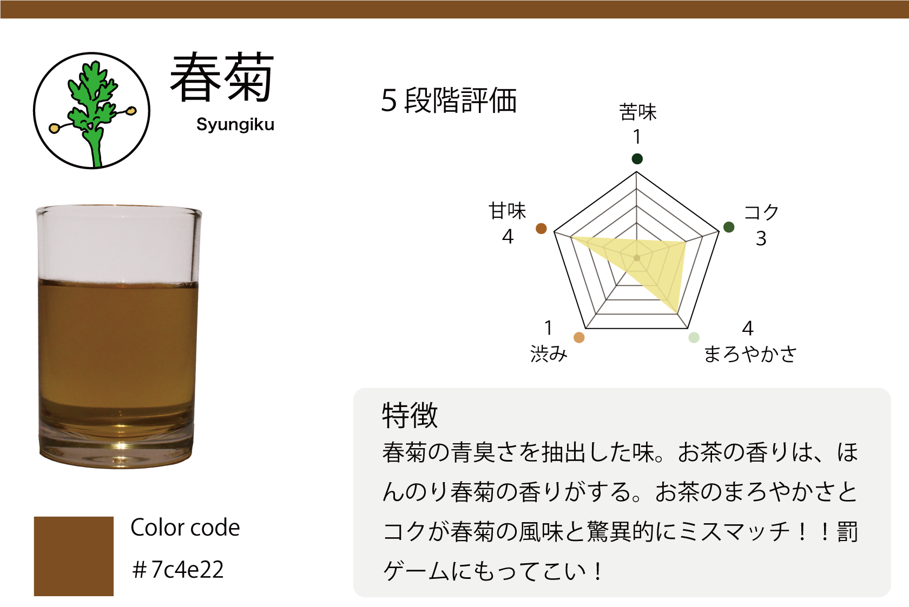
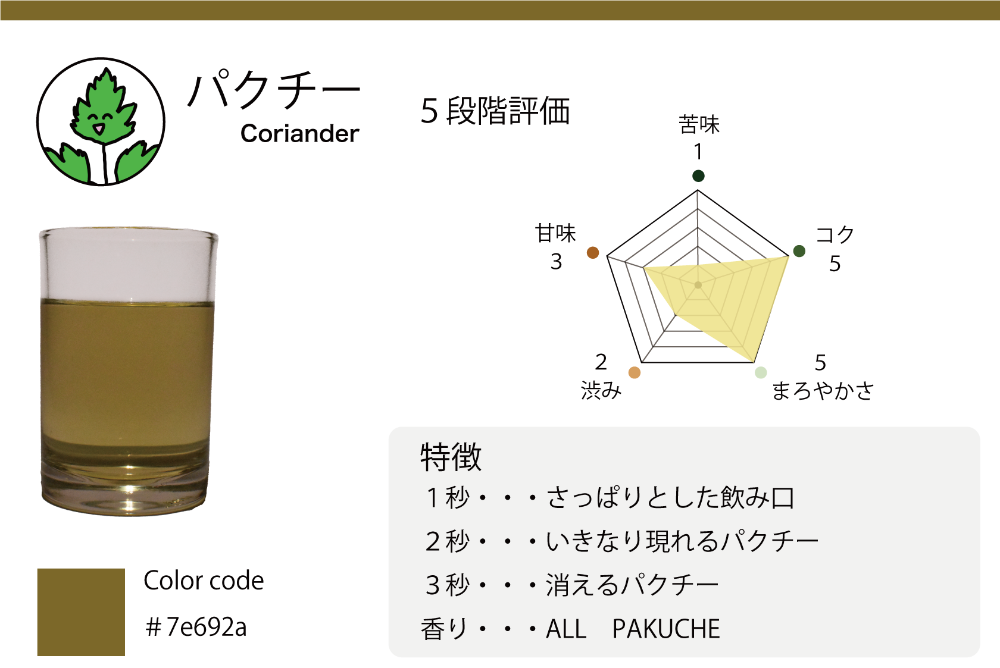
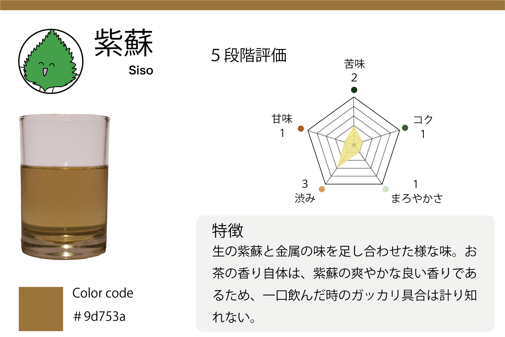
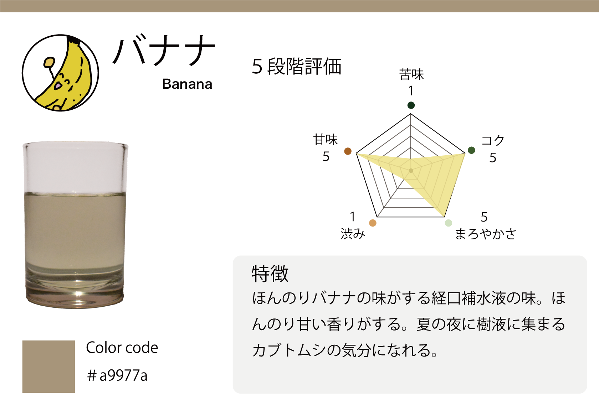
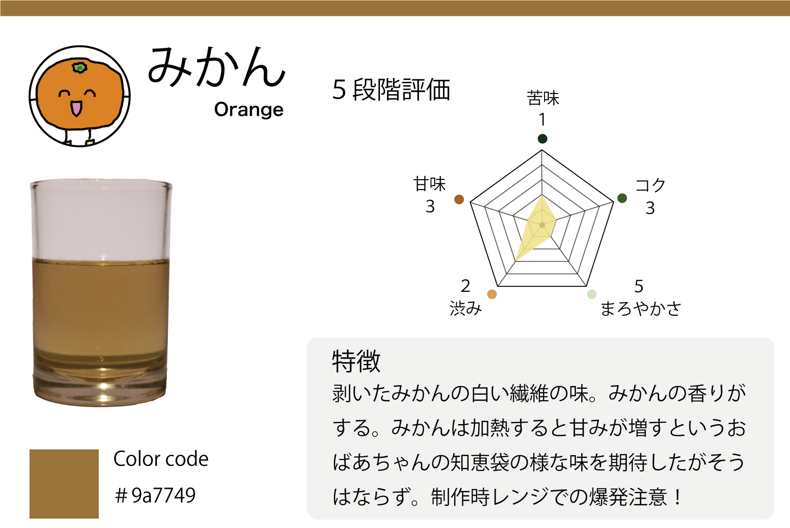
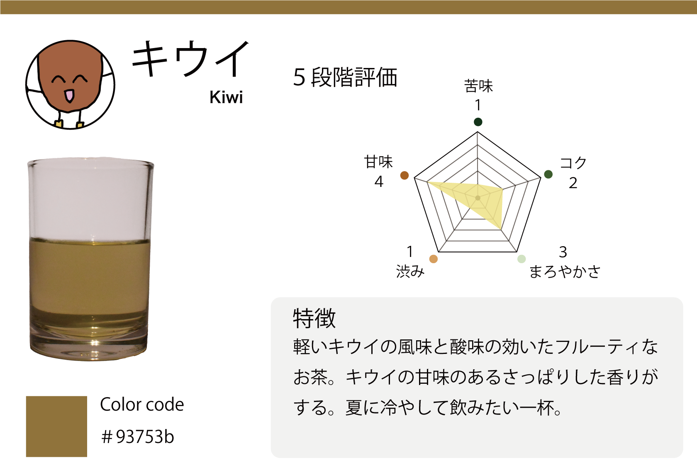
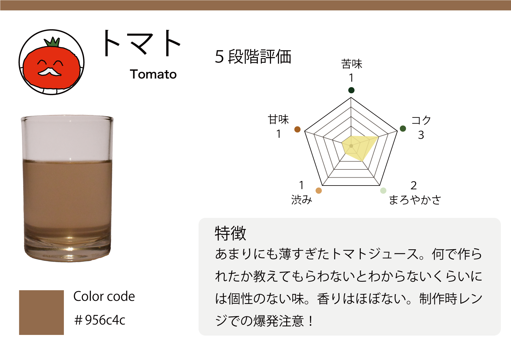

当サイトについて
お茶研究所のホームページにご訪問頂き、誠にありがとうございます。
当サイトは、普段お茶にしない野菜や果物でお茶を作り、味や作り方をまとめています。
掲載しているお茶は、管理人が実際に作りまとめています。
当サイトを通じて、野菜や果物でお茶を作って頂ければと思います。
お茶の作り方
１.お茶にする野菜を良く洗い細かく切りキッチンペーパー当で、水気を取ります。
カット野菜を使用する場合はここの工程を省いても良い。

２.切った野菜をできるだけ重ならないように耐熱皿に置き電子レンジで６００W１分加熱する。
３.一度電子レンジから取り出し野菜から出た水分をキッチンペーパー当で拭き取り、電子レンジで５００W３０秒加熱する。
ある程度パサついた野菜が出るまでこの工程を繰り返し行う。
４.野菜が乾いてきたらフライパンに移し野菜が乾くまで炒る。
できるだけ焦がさないよう注意しましょう。
５.乾いたらできた茶葉をティーポットに入れ熱いお湯を入れお召し上がりください。
※下記の注意事項を読みお作りください。
１.電子レンジでの加熱し過ぎに注意してください。
２.水分量の多い食材を使用する際は爆発に注意してください。（例.ぶどう、ライチなど）
３.制作したお茶の飲用は自己責任でお願いします。
お茶図鑑
バジル
キャベツ
セロリ

春菊

パクチー

紫蘇

バナナ
りんご

みかん

キウイ
人参
パプリカ

トマト
サツマイモ